library(deSolve)
library(tidyverse)
# Define parameters
N <- 1e6 # Total population
beta <- 0.5 # Transmission rate
gamma <- 0.1 # Recovery rate
t_exp <- 5 # Latent period - or incubation period
# Initial conditions
init <- c(S = N - 1, E = 1, I = 0, R = 0)
# Define the SEIR model
seir_model <- function(t, y, parameters) {
with(as.list(y), {
dS <- -beta * S * I / N
dE <- beta * S * I / N - (1 / t_exp) * E
dI <- (1 / t_exp) * E - gamma * I
dR <- gamma * I
return(list(c(dS, dE, dI, dR)))
})
}15 COVID-19 Outbreaks
Learning Objectives
- Understand the key characteristics and impact of COVID-19
- Explore how COVID-19 spreads through populations and environments
- Learn to map and visualize COVID-19 outbreaks using spatial data
In this chapter, we explore the dynamics of COVID-19 disease outbreaks in more detail. We examine the results of various model’s applications that simulate the spread of the virus.
15.1 Epidemiology
COVID-19, short for “Coronavirus Disease 2019,” is an infectious disease caused by the novel coronavirus SARS-CoV-2, a type of virus that is part of the Coronaviridae1 family of viruses that can cause illness in animals and humans alike. The disease was first identified in December 2019 in Wuhan, Hubei province, China, and has since then spread globally, leading to a pandemic.2
The origin of the virus is still under investigation,3 but it is believed to have zoonotic4 origins, with bats being the most likely reservoir. The virus has also been linked to pangolins,5 mammals that are illegally trafficked for their scales and meat. The virus is thought to have jumped from animals to humans, possibly through a wet market in Wuhan where live animals were sold.
Zoonotic diseases are a critical area of study in public health and epidemiology due to their significant impact on human populations and the potential for pandemics. As discussed by MD Laura H. Kahn in One Health and the Politics of COVID-19,6 the pandemic’s origins and spread highlight the critical need for a holistic understanding of health systems that integrates human, animal, and environmental health. Zoonotic viruses can be transmitted from animals to humans through direct contact, consumption of contaminated food or water, or exposure to infected animal products. These viruses can cause a range of diseases, from mild illnesses to severe respiratory infections, and can have devastating effects on public health and economies.
On January 30, 2020, The World Health Organization (WHO) declared the COVID-19 Outbreak a Public Health Emergency of International Concern, and a worldwide investigation started to understand more about the virus and its effects on humans. This challenge involved the unprecedented identification of this type of virus, requiring thorough testing and confirmation of the incubation period, recovery rate, and infection rate through the collection of cases globally.
The virus spreads primarily through respiratory droplets. Symptoms can include loss of taste and smell, fatigue, muscle aches, and gastrointestinal issues, with fever, cough, and shortness of breath. Severe cases can lead to pneumonia, acute respiratory distress syndrome (ARDS), and death. The emergency was primarily due to the high number of deaths occurring without a known pharmacological intervention to contain it.
Various preventive measures were established, but the presence of asymptomatic and symptomatic cases created challenges in identifying the incubation time, leading governments to impose restrictions through lockdowns of entire cities and regions in affected countries. These measures restricted movement and activities to curb the virus’s transmission.
The pandemic has led to widespread healthcare challenges, economic disruptions, and significant changes to daily life, including social distancing measures, lockdowns, and travel restrictions.
Since its identification, COVID-19 has caused multiple outbreaks globally. The incubation period ranges from 2 to 14 days, during which an infected person may be asymptomatic but still contagious. As of May 2024, there have been over 775 million confirmed cases and more than seven million deaths worldwide. The impact of the pandemic has varied across regions, influenced by factors such as virus variants, public health responses, and vaccination rates.
COVID-19 has had a profound impact on global health, economies, and daily life. Efforts to combat the pandemic have involved unprecedented levels of international cooperation, scientific research, and public health initiatives. Ongoing vaccination campaigns and adherence to public health guidelines are critical in controlling the spread of the virus and preventing further outbreaks. However, vaccine hesitancy and resistance, driven by concerns about the speed of development and potential long-term effects, remain significant challenges in achieving widespread vaccination coverage.
15.2 Mapping COVID-19 Outbreaks
Mapping COVID-19 outbreaks helps identify infection hotspots, track the virus’s spread, and inform public health interventions. Geographic Information Systems (GIS) and spatial analysis techniques can visualise and analyse COVID-19 data, such as the number of cases, deaths, and recoveries, at local, regional, and global levels.
15.3 Example: Modelling the Spread of COVID-19
Spatiotemporal modelling of COVID-19 outbreaks can provide valuable insights into the pandemic’s dynamics and help guide public health responses. In this example, we’ll use the Susceptible-Exposed-Infected-Recovered (SEIR) model to simulate the spread of COVID-19 infections, as we saw in Section 6.3.2. A Bayesian machine learning approach is used to predict the spread of the virus over time and across different regions. Bayesian methods handle uncertainties and allow for the integration of prior information into the model.
15.3.1 SEIR model
First, we use the SEIR model function to simulate the spread of the disease. The model compartments are: the number of susceptible (S), the exposed (E), the infected (I), and R represents the number of recovered individuals. The parameters of the model are the transmission rate (\beta) and the recovery rate (\gamma), (t_{exp}) the latent period, and (N) is the total population.
As seen previously, we’ll use the ode() function from the {deSolve} package to solve the ordinary differential equations (ODEs) and simulate the spread of the virus over a period of 365 days:
times <- seq(0, 365, by = 1)
result <- ode(y = init, times = times, func = seir_model)
result %>% head()
#> time S E I R
#> [1,] 0 999999.0 1.0000000 0.0000000 0.000000000
#> [2,] 1 999999.0 0.8614244 0.1750967 0.009130285
#> [3,] 2 999998.8 0.8186971 0.3169955 0.033923201
#> [4,] 3 999998.6 0.8440094 0.4441703 0.072045032
#> [5,] 4 999998.4 0.9214811 0.5692891 0.122692748
#> [6,] 5 999998.1 1.0429872 0.7015882 0.186144186ggplot(as.data.frame(result), aes(time, I, color = "Infected")) +
geom_line() +
geom_line(aes(time, R, color = "Recovered")) +
geom_line(aes(time, S, color = "Susceptible")) +
geom_line(aes(time, E, color = "Exposed")) +
scale_color_discrete(name = "Compartment") +
labs(x = "Time (days)", y = "Number of individuals")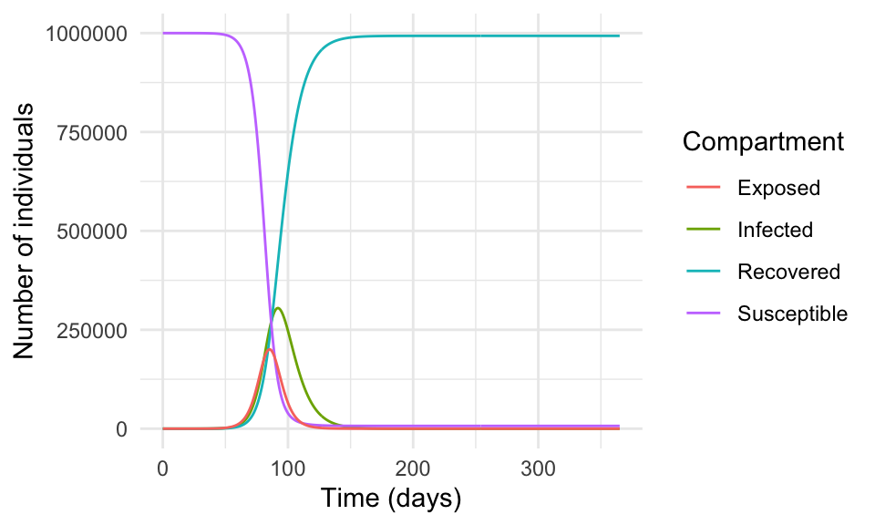
In reality, the spread of a virus is much more complex and influenced by many factors such as human behaviour, government policies, healthcare systems, vaccination campaigns, and human contact.
15.3.2 Bayesian Analysis
The use of Bayesian analysis in modelling infectious diseases offers several advantages in understanding and predicting the dynamics of the spread. We implement a Bayesian regression model for COVID-19 cases using the {brms} package, which is an interface of Stan for Bayesian analysis. The source for Stan is available at https://mc-stan.org/.
The application of Bayesian analysis allows us to estimate the regression coefficients for the lag-1 and lag-7 cases, which can help predict the number of infected individuals over time, with the flexibility to incorporate prior knowledge and uncertainties into the model.
The model is specified as follows:
I_t \sim \text{Normal}(\beta \times I_{t-1} + \gamma \times I_{t-7}, \sigma)
where I_t is the number of infected individuals at time t, \beta is the regression coefficient for the lag-1 cases, \gamma is the regression coefficient for the lag-7 cases, and \sigma is the error term. The model assumes that the number of infected individuals at time t is normally distributed around the predicted value based on the number of cases at times t-1 and t-7.
We can specify the prior distributions for \beta and \gamma using expert knowledge and available data. For example, we might specify a gamma distribution with a mean of 0.1 and a standard deviation of 0.05 for \beta, and a gamma distribution with a mean of 0.05 and a standard deviation of 0.02 for \gamma.
result <- as.data.frame(result)
cv19_data <- result %>%
mutate(date = as.Date(time, origin = "2022-01-01"),
day_of_week = wday(date, label = TRUE),
week_of_year = week(date),
month = month(date),
lag_1_cases = lag(I, 1),
lag_7_cases = lag(I, 7)) %>%
drop_na()
cv19_data %>% head(n = 3) %>% glimpse()
#> Rows: 3
#> Columns: 11
#> $ time <dbl> 7, 8, 9
#> $ S <dbl> 999997.2, 999996.7, 999996.0
#> $ E <dbl> 1.409890, 1.659350, 1.959605
#> $ I <dbl> 1.016210, 1.211223, 1.439964
#> $ R <dbl> 0.3565260, 0.4676444, 0.5998941
#> $ date <date> 2022-01-08, 2022-01-09, 2022-01-10
#> $ day_of_week <ord> Sat, Sun, Mon
#> $ week_of_year <dbl> 2, 2, 2
#> $ month <dbl> 1, 1, 1
#> $ lag_1_cases <dbl> 0.8484115, 1.0162103, 1.2112229
#> $ lag_7_cases <dbl> 0.0000000, 0.1750967, 0.3169955In this example we do not split the data into training and testing sets, but in a real-world scenario, it is essential to validate the model’s performance on unseen data. Our data are made of 359 observations and 11 variables.
cv19_data %>% dim()
#> [1] 359 11The brm() function from the {brms} package, fits the Bayesian regression model to the data by specifying the outcome variable I (number of infected individuals) and the predictors day_of_week, week_of_year, month, lag_1_cases, and lag_7_cases. We use a Gaussian likelihood function and specify prior distributions for the regression coefficients and the error term. The Stan algorithm is used to sample from the posterior distribution of the model parameters. In particular, we use a normal prior distribution with a mean of 0 and standard deviation of 10 for the regression coefficients and a Cauchy prior distribution with a scale of 5 for the error term.
The decision to use a normal and a Cauchy prior is based on the properties of the data and the model assumptions. In this case, we assume that the regression coefficients are normally distributed around 0 with a standard deviation of 10, and the error term is distributed according to a Cauchy distribution with a scale of 5.
The model is run for 2000 iterations with a warmup of 1000 iterations and 4 chains. The reason for the warmup is to allow the Markov Chain Monte Carlo (MCMC) algorithm to converge to the posterior distribution. The chains are run in parallel to explore the parameter space and estimate the posterior distribution of the model parameters.
library(brms)# Define the Bayesian regression model
bayesian_model <- brm(
I ~ day_of_week + week_of_year + month + lag_1_cases + lag_7_cases,
data = cv19_data,
family = gaussian(),
prior = c(set_prior("normal(0, 10)", class = "b"),
set_prior("cauchy(0, 5)", class = "sigma")),
iter = 2000,
warmup = 1000,
chains = 4,
seed = 42
)The bayesian_model object contains the fitted model, including the posterior samples of the model parameters. We can inspect the summary of the model to assess the convergence of the chains, the posterior distribution of the parameters, and the model fit statistics.
summary(bayesian_model)$fixed %>%
rownames_to_column(var = "parameter") %>%
head(n = 3) %>%
glimpse()
#> Rows: 3
#> Columns: 8
#> $ parameter <chr> "Intercept", "day_of_week.L", "day_of_week.Q"
#> $ Estimate <dbl> 866.78250835, -0.04239118, -0.16213817
#> $ Est.Error <dbl> 145.09866, 10.17293, 10.07890
#> $ `l-95% CI` <dbl> 576.67263, -19.85932, -19.61945
#> $ `u-95% CI` <dbl> 1137.71086, 20.30390, 19.72001
#> $ Rhat <dbl> 1.000109, 1.000764, 1.000761
#> $ Bulk_ESS <dbl> 5660.295, 5486.962, 5309.553
#> $ Tail_ESS <dbl> 3204.207, 2641.086, 2846.849The model output tells us about the convergence of the chains, the posterior distribution of the parameters, and the model fit statistics. We can see the mean, median, and 95% credible intervals for the regression coefficients, as well as the standard deviation of the error term. The Rhat statistic measures the convergence of the chains, with values close to 1 indicating convergence. The n_eff statistic measures the effective sample size of the chains, with higher values indicating more reliable estimates. The looic statistic is the leave-one-out cross-validation information criterion, which measures the model’s predictive performance.
Or access the formula used in the model:
bayesian_model$formula
#> I ~ day_of_week + week_of_year + month + lag_1_cases + lag_7_casesAfter fitting the model, we can plot the model diagnostics to assess its performance with the plot() function. The diagnostics include trace plots of the chains, density plots of the posterior distributions, and the Gelman-Rubin statistic, which measures the convergence of the chains. The Gelman-Rubin statistic should be close to 1 for the model to have converged.
# Plot the model diagnostics
plot(bayesian_model)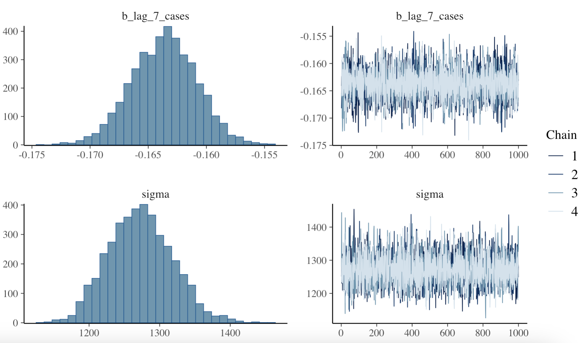
Then, finally we can make predictions using the fitted model and visualise the actual vs. predicted COVID-19 cases over time. The predictions object is type matrix/array.
predictions <- predict(bayesian_model, newdata = cv19_data)
predictions %>% head()
#> Estimate Est.Error Q2.5 Q97.5
#> [1,] 804.6101 1302.693 -1723.897 3382.245
#> [2,] 813.6701 1306.077 -1761.975 3347.674
#> [3,] 814.7225 1279.696 -1625.528 3300.221
#> [4,] 832.8884 1275.817 -1671.452 3319.420
#> [5,] 864.8652 1301.125 -1722.886 3456.137
#> [6,] 838.3124 1254.658 -1658.822 3293.224Create a new data frame with the actual and predicted values for COVID-19 cases, and then plot the actual vs. predicted values over time.
predictions <- as_tibble(predictions)
cv19_data_pred <- cv19_data %>%
mutate(predicted_cases = predictions$Estimate)
# Plot actual vs. predicted values
ggplot(data = cv19_data_pred,
aes(x = I, y = predicted_cases)) +
geom_point() +
geom_abline() +
labs(title = "Actual vs. Predicted COVID-19 Cases",
x = "Date", y = "Cases", color = "Legend")
ggplot(data = cv19_data_pred, aes(x = date)) +
geom_point(aes(y = I,
color = "Actual")) +
geom_line(aes(y = predicted_cases,
color = "Predicted")) +
labs(title = "Actual vs. Predicted COVID-19 Cases",
x = "Date", y = "Cases", color = "Legend") 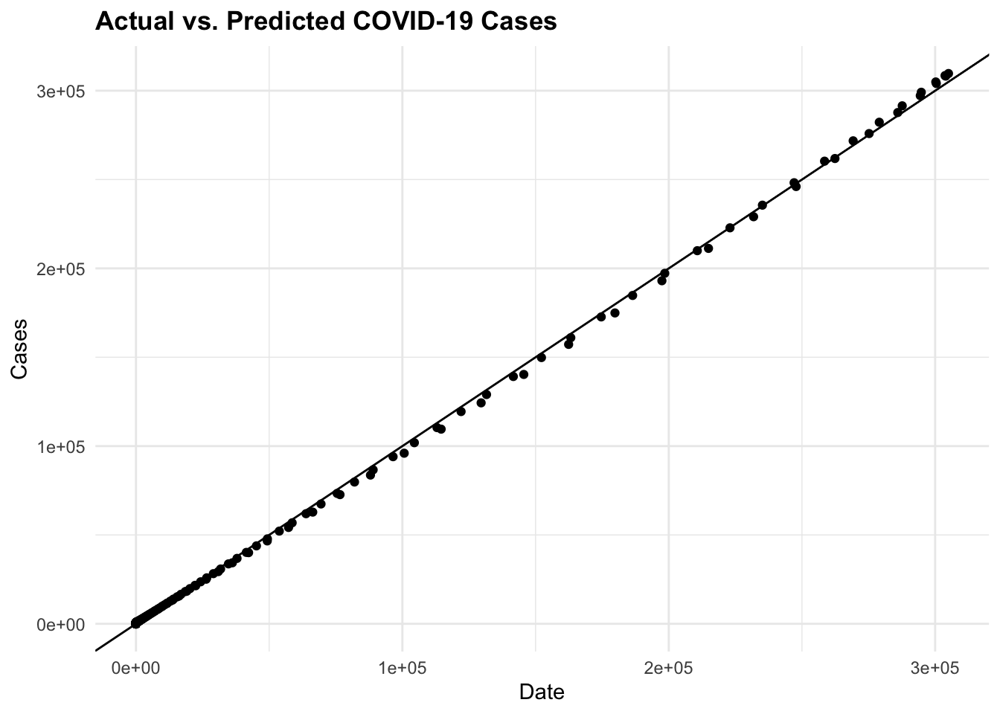
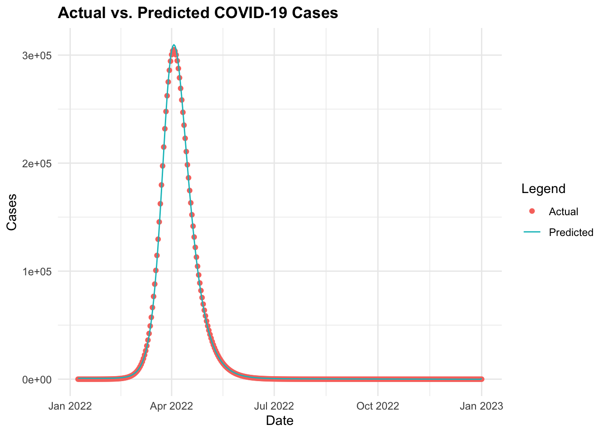
15.3.3 Ensemble Modelling - Combining Multiple Models
We have been able to simulate the spread of COVID-19 using the SEIR and predict the spread using the Bayesian regression model. However, combining the predictions of multiple models can provide more accurate and robust forecasts. This technique is known as ensemble modelling.
Ensemble modelling combines the predictions of multiple models to improve the overall accuracy and robustness of predictions. This technique is particularly useful in infectious disease modelling to account for uncertainties and variability in data, providing more reliable estimates of disease spread.
This method combines the strengths of different models to produce more accurate and stable predictions by averaging the results of individual models or using more sophisticated techniques such as stacking or boosting.
For example, ensemble models have been used to predict confirmed COVID-19 cases and provide short-term forecasts by integrating multiple model types. Other methods combine sub-epidemic models over various forecasting periods to enhance prediction accuracy.7
In this example, we use the {tidymodels} meta-package and other key packages such as {modeltimes}, and {stacks} to combine different types of models. We will use: Decision Tree, Random Forest, K-Nearest Neighbours (KNN), and Support Vector Machines (SVM) models to combine and predict the spread of COVID-19 cases.
library(tidymodels)
library(modeltime)
library(stacks)We start by splitting the data into training and testing sets using the initial_split() function from the {rsample} package. The training set will be used to train the models, while the testing set will be used to evaluate the models’ performance.
set.seed(10011)
# Split the data into training and testing sets
cv_split <- initial_split(cv19_data, prop = 0.8)
cv_train <- training(cv_split)
cv_test <- testing(cv_split)Create a vfold_cv() object for cross-validation with 10 folds. This object will be used to evaluate the models’ performance during training.
set.seed(1001)
cv_folds <- vfold_cv(cv_train, v = 10)We also define a recipe to preprocess the data, including log transformation and dummy encoding of categorical variables. The recipe is then used to create a workflow that combines the preprocessing steps with the model specifications.
cv_recipe <- recipe(I ~ ., data = cv_train) %>%
step_scale(all_numeric(), -all_outcomes()) %>%
step_dummy(all_nominal(), -all_outcomes()) To check the output of the recipe transformation: cv_recipe %>% prep() %>% juice()
Define the models’ specifications with the parameters to tune, and the engine to use:
# Decision Tree
cart <- decision_tree(cost_complexity = tune(),
tree_depth = tune(),
min_n = tune()) %>%
set_engine("rpart") %>%
set_mode("regression")
# Random Forest
rand_forest <- rand_forest(mtry = tune(),
min_n = tune()) %>%
set_engine('ranger') %>%
set_mode('regression')
# K-Nearest Neighbors (KNN)
knn <- nearest_neighbor(neighbors = tune()) %>%
set_engine("kknn") %>%
set_mode("regression")
# Support Vector Machine (SVM)
svm <- svm_rbf(cost = tune(),
rbf_sigma = tune()) %>%
set_engine("kernlab") %>%
set_mode("regression")Then, create a workflow_set() that combines the predictions of different models:
cv_wkf <- workflow_set(
preproc = list(id = cv_recipe),
models = list(Decision_tree = cart,
Random_Forest = rand_forest,
Knn = knn,
SVM = svm))
cv_wkf
#> # A workflow set/tibble: 4 × 4
#> wflow_id info option result
#> <chr> <list> <list> <list>
#> 1 id_Decision_tree <tibble [1 × 4]> <opts[0]> <list [0]>
#> 2 id_Random_Forest <tibble [1 × 4]> <opts[0]> <list [0]>
#> 3 id_Knn <tibble [1 × 4]> <opts[0]> <list [0]>
#> 4 id_SVM <tibble [1 × 4]> <opts[0]> <list [0]>Create a workflow_map() to fit the models to the training data. We use the {finetune} package to use the tune_race_anova function to tune the hyperparameters of the models. The race_ctrl object specifies the control parameters for the tuning process, such as the number of resamples and the grid size. The parallel_over argument allows the tuning process to run in parallel over multiple cores for faster computation.
# Fit the models to the training data
library(finetune)
set.seed(112233)
race_ctrl <-
control_race(save_pred = TRUE,
parallel_over = "everything",
save_workflow = TRUE)
race_results <- cv_wkf %>%
workflow_map("tune_race_anova",
seed = 1503,
resamples = cv_folds,
grid = 3,
control = race_ctrl)
race_results
#> # A workflow set/tibble: 4 × 4
#> wflow_id info option result
#> <chr> <list> <list> <list>
#> 1 id_Decision_tree <tibble [1 × 4]> <opts[3]> <race[+]>
#> 2 id_Random_Forest <tibble [1 × 4]> <opts[3]> <race[+]>
#> 3 id_Knn <tibble [1 × 4]> <opts[3]> <race[+]>
#> 4 id_SVM <tibble [1 × 4]> <opts[3]> <race[+]>Then we collect the metrics for the models to evaluate their performance. We filter the results for the root mean squared error (rmse) and arrange them in ascending order to identify the best-performing model.
rmse <- collect_metrics(race_results) %>%
filter(.metric == "rmse") %>%
select(wflow_id, .config, mean) %>%
arrange(mean)
rmse
#> # A tibble: 5 × 3
#> wflow_id .config mean
#> <chr> <chr> <dbl>
#> 1 id_Random_Forest Preprocessor1_Model2 5595.
#> 2 id_SVM Preprocessor1_Model1 7642.
#> 3 id_Decision_tree Preprocessor1_Model2 8057.
#> 4 id_Knn Preprocessor1_Model3 14034.
#> 5 id_Knn Preprocessor1_Model2 14817.Plot the root mean squared error (rmse) values for the models to visualise their performance.
rmse %>%
ggplot(aes(x = fct_reorder(wflow_id, mean), y = mean)) +
geom_col(fill = "navy") +
labs(title = "Root Mean Squared Error (RMSE) for Models",
x = "Model", y = "RMSE") 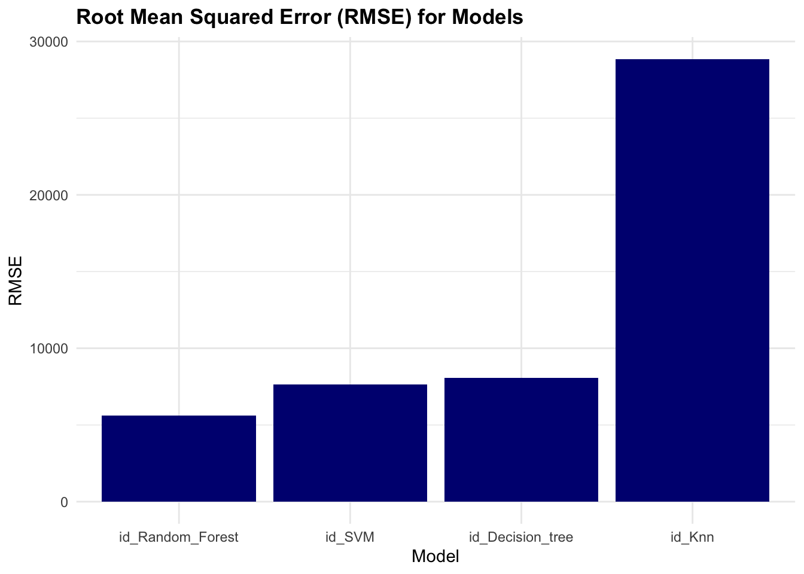
The results of the race show that the Random Forest model has the lowest rmse value, indicating better performance compared to the other models.
Extract the model’s estimations:
race_results %>%
collect_predictions() %>%
ggplot(aes(x = I, y = .pred,
group= model,
shape= model,
color = model)) +
geom_point() +
geom_abline() 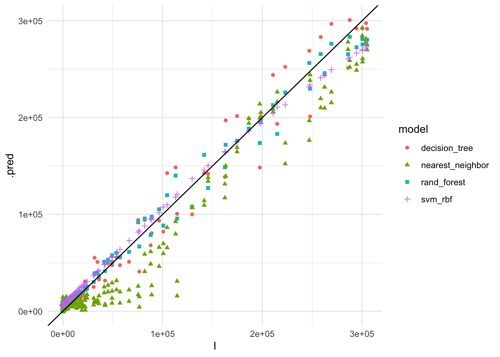
The plot shows the actual vs. predicted values for COVID-19 cases using the different models. The Random Forest model appears to have the best fit to the data, closely following the 45-degree line, indicating accurate predictions.
So, let’s see how combined predictions look like:
race_results %>%
collect_predictions() %>%
group_by(I) %>%
summarise(mean_pred = mean(.pred)) %>%
ggplot(aes(x = I, y = mean_pred)) +
geom_point() +
geom_abline()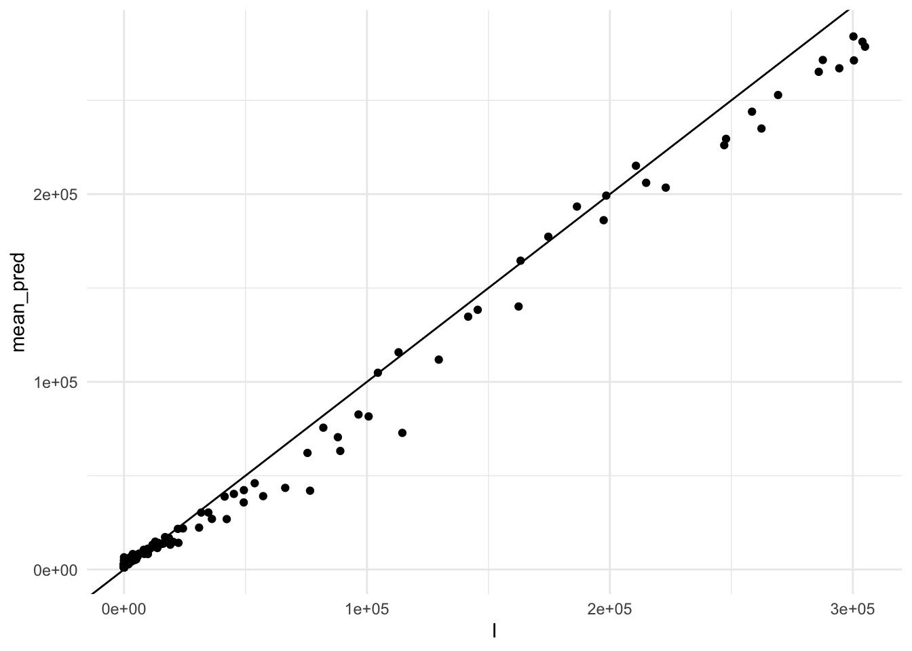
Finally, we can combine the predictions of the models using the {stacks} package to create an ensemble model. The stack() function combines the predictions of the models using a meta-learner, such as a linear regression model, to produce a final prediction.
cv_stack <- stacks() %>%
add_candidates(race_results)
cv_stack
#> # A data stack with 4 model definitions and 5 candidate members:
#> # id_Decision_tree: 1 model configuration
#> # id_Random_Forest: 1 model configuration
#> # id_Knn: 2 model configurations
#> # id_SVM: 1 model configuration
#> # Outcome: I (numeric)Blend the predictions of the models:
set.seed(2001)
cv_ens <- blend_predictions(cv_stack)
cv_ens
#> # A tibble: 3 × 3
#> member type weight
#> <chr> <chr> <dbl>
#> 1 id_SVM_1_1 svm_rbf 0.751
#> 2 id_Random_Forest_1_2 rand_forest 0.190
#> 3 id_Knn_1_3 nearest_neighbor 0.147autoplot(cv_ens, "weights") 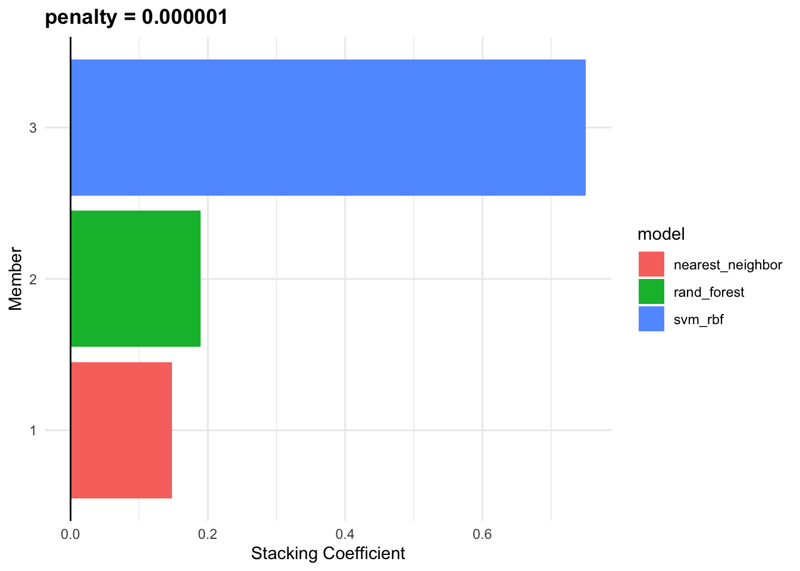
fit_cv_ens <- fit_members(cv_ens)
fit_cv_ens
#> # A tibble: 3 × 3
#> member type weight
#> <chr> <chr> <dbl>
#> 1 id_SVM_1_1 svm_rbf 0.751
#> 2 id_Random_Forest_1_2 rand_forest 0.190
#> 3 id_Knn_1_3 nearest_neighbor 0.147cv_ens_test_pred <-
predict(fit_cv_ens, new_data = cv_test) %>%
bind_cols(cv_test)cv_ens_test_pred %>%
ggplot(aes(x = I, y = .pred)) +
geom_point(alpha=0.5) +
geom_abline()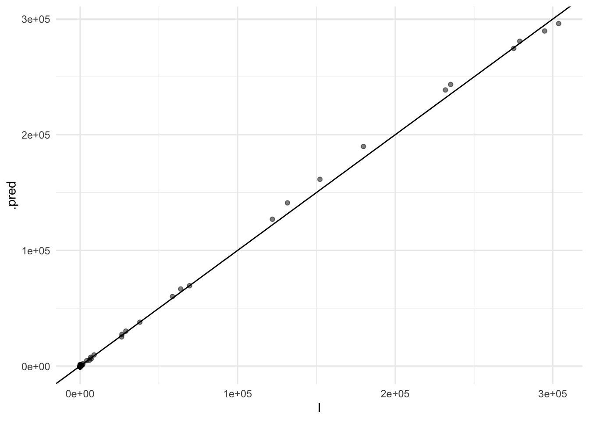
In summary, integrating machine learning models and advanced statistical techniques such as Bayesian analysis and ensemble modelling can significantly enhance our ability to predict and understand the spread of infectious diseases like COVID-19. These models provide critical insights that can inform public health responses and help mitigate the impact of pandemics.
15.4 COVID-19 & DALYs
The influence of COVID-19 on global health can be measured using the DALYs. We use the data from the JHU official GitHub repository CSSEGISandData8 to calculate the DALYs for COVID-19. The data includes the number of confirmed cases, deaths, and recovered cases for each country and region. We will calculate the DALYs for the US, China, United Kingdom, and Canada.
Data are loaded from the repository with the read.csv() function, and need a bit of adjustment before can be used.
tidyverse_conflicts()Here we use the pivot_longer() to combine all cases by day in one column, and see the first rows:
cases1 <- cases %>%
pivot_longer(cols = starts_with("X"),
names_to = "date",
values_to = "cases") %>%
mutate(date = gsub("X", "", date),
date = as.Date(date, format = "%m.%d.%y")) %>%
janitor::clean_names()
cases1 %>% head()
#> # A tibble: 6 × 6
#> province_state country_region lat long date cases
#> <chr> <chr> <dbl> <dbl> <date> <int>
#> 1 "" Afghanistan 33.9 67.7 2020-01-22 0
#> 2 "" Afghanistan 33.9 67.7 2020-01-23 0
#> 3 "" Afghanistan 33.9 67.7 2020-01-24 0
#> 4 "" Afghanistan 33.9 67.7 2020-01-25 0
#> 5 "" Afghanistan 33.9 67.7 2020-01-26 0
#> 6 "" Afghanistan 33.9 67.7 2020-01-27 0The same is done with deaths:
deaths1 <- deaths %>%
pivot_longer(cols = starts_with("X"),
names_to = "date",
values_to = "deaths") %>%
mutate(date = gsub("X", "", date),
date = as.Date(date, format = "%m.%d.%y")) %>%
janitor::clean_names()
deaths1 %>% head()
#> # A tibble: 6 × 6
#> province_state country_region lat long date deaths
#> <chr> <chr> <dbl> <dbl> <date> <int>
#> 1 "" Afghanistan 33.9 67.7 2020-01-22 0
#> 2 "" Afghanistan 33.9 67.7 2020-01-23 0
#> 3 "" Afghanistan 33.9 67.7 2020-01-24 0
#> 4 "" Afghanistan 33.9 67.7 2020-01-25 0
#> 5 "" Afghanistan 33.9 67.7 2020-01-26 0
#> 6 "" Afghanistan 33.9 67.7 2020-01-27 0Then, the next step is to join the two sets by province, country, lat, long, and date. Sum the number of cases and deaths and calculate the case fatality ratio (CFR) as deaths divided by cases.
COVID19 <- cases1 %>%
left_join(deaths1,
by = c("province_state",
"country_region",
"lat", "long", "date")) %>%
mutate(cases = ifelse(is.na(cases), 0, cases),
deaths = ifelse(is.na(deaths), 0, deaths)) %>%
group_by(country_region, date) %>%
mutate(cases = sum(cases),
deaths = sum(deaths),
cfr = round(deaths / cases, 3)) %>%
filter(cases > 0) %>%
arrange(country_region, date)
COVID19 %>%
select(country_region, date, cases, deaths, cfr) %>%
arrange(desc(date)) %>%
head()
#> # A tibble: 6 × 5
#> # Groups: country_region, date [6]
#> country_region date cases deaths cfr
#> <chr> <date> <int> <int> <dbl>
#> 1 Afghanistan 2023-03-09 209451 7896 0.038
#> 2 Albania 2023-03-09 334457 3598 0.011
#> 3 Algeria 2023-03-09 271496 6881 0.025
#> 4 Andorra 2023-03-09 47890 165 0.003
#> 5 Angola 2023-03-09 105288 1933 0.018
#> 6 Antarctica 2023-03-09 11 0 0Now that the COVID19 set is human readable we can select our countries: US, China, United Kingdom, and Canada.
COVID19_4countries <- COVID19 %>%
filter(country_region %in%
c("US", "China", "United Kingdom", "Canada"))
COVID19_4countries %>%
select(- lat, -long) %>%
head()
#> # A tibble: 6 × 6
#> # Groups: country_region, date [1]
#> province_state country_region date cases deaths cfr
#> <chr> <chr> <date> <int> <int> <dbl>
#> 1 Alberta Canada 2020-01-23 2 0 0
#> 2 British Columbia Canada 2020-01-23 2 0 0
#> 3 Diamond Princess Canada 2020-01-23 2 0 0
#> 4 Grand Princess Canada 2020-01-23 2 0 0
#> 5 Manitoba Canada 2020-01-23 2 0 0
#> 6 New Brunswick Canada 2020-01-23 2 0 0Here we can see how COVID19 cases and deaths distributed along the years with a simple line plot:
COVID19 %>%
ggplot(aes(x = date, y = cases,
group = country_region)) +
geom_line(color = "grey",
linewidth = 0.2) +
geomtextpath::geom_textline(
data = COVID19_4countries,
aes(label = country_region),
show.legend = F) +
scale_y_log10() +
labs(title = "COVID-19 Cases by Country",
x = "Date",
y = "Cases")
COVID19 %>%
ggplot(aes(x = date, y = deaths,
group = country_region)) +
geom_line(color = "grey",
linewidth = 0.2) +
geomtextpath::geom_textline(
data = COVID19_4countries,
aes(label = country_region),
show.legend = F) +
scale_y_log10() +
labs(title = "COVID-19 Deaths by Country",
x = "Date",
y = "Deaths") 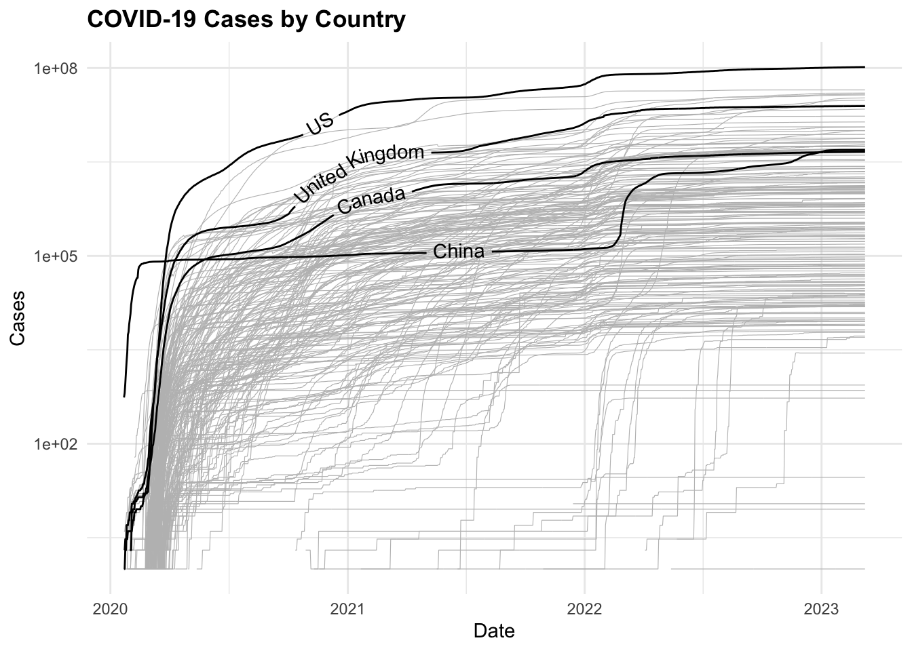
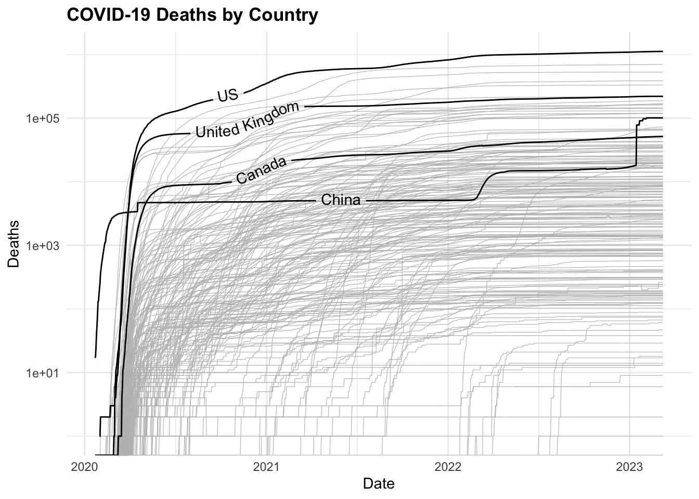
Now, to visualise the total number of cases and deaths by selected countries on a map, we use the map_data() function to retrieve the world geographic coordinates, and calculate the centroids by grouping by country_region.
worldmap <- map_data("world") %>%
filter(!region == "Antarctica")
centroids <- COVID19 %>%
group_by(country_region, lat, long) %>%
reframe(tot_cases = sum(cases),
tot_deaths = sum(deaths),
avg_cfr = round(mean(cfr), 3)) %>%
distinct()ggplot() +
geom_polygon(data = worldmap,
aes(x = long, y = lat, group = group),
fill = "grey",
color = "white") +
geom_point(data = centroids,
aes(x = long, y = lat,
size = tot_cases,
color = avg_cfr),
alpha = 0.5) +
scale_size_continuous(name = "Total cases (M)",
labels = scales::unit_format(unit = "M",
scale = 1e-6)) +
scale_color_viridis_c(name = "Average CFR (log scale)",
trans = "log",
labels = scales::label_number(accuracy = 0.001)) +
guides(color = guide_colorbar(order = 1),
size = guide_legend(order = 2)) +
coord_quickmap() +
labs(title = "COVID-19 Cases by Country",
caption = "Data Source: JHU CSSEGISandData/COVID-19
\nCircle size: total cases, Color: average CFR",
size= "Total cases (M)",
color= "Avg CFR (log scale)",
x = "", y = "") +
theme(axis.text = element_blank(),
plot.subtitle = element_text(size = 8),
legend.key.size = unit(0.5, "cm"),
legend.text = element_text(size = 8),
legend.title = element_text(size = 9))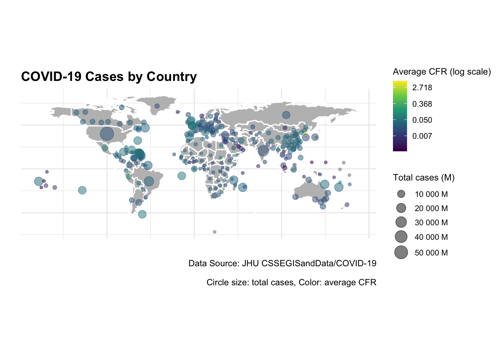
The same graph is made with selected countries only.
ggplot() +
geom_polygon(data = worldmap,
aes(x = long, y = lat, group = group),
fill = "grey",
color = "white") +
geom_point(data = centroids %>%
filter(country_region %in%
c("US", "China","United Kingdom", "Canada")),
aes(x = long, y = lat,
size = tot_cases,
color = avg_cfr),
alpha = 0.5) +
scale_size_continuous(name = "Total cases (M)",
labels = scales::unit_format(unit = "M",
scale = 1e-6)) +
scale_color_viridis_c(name = "Average CFR (log scale)",
trans = "log",
labels = scales::label_number(accuracy = 0.001)) +
guides(color = guide_colorbar(order = 1),
size = guide_legend(order = 2)) +
coord_quickmap() +
labs(title = "COVID-19 Cases by Country",
caption = "Data Source: JHU CSSEGISandData/COVID-19
\nCircle size: total cases, Color: average CFR",
subtitle = "US, China, United Kingdom, Canada",
size= "Total cases (M)",
color= "Avg CFR (log scale)",
x = "", y = "") +
theme(axis.text = element_blank(),
plot.subtitle = element_text(size = 8),
legend.key.size = unit(0.5, "cm"),
legend.text = element_text(size = 8),
legend.title = element_text(size = 9))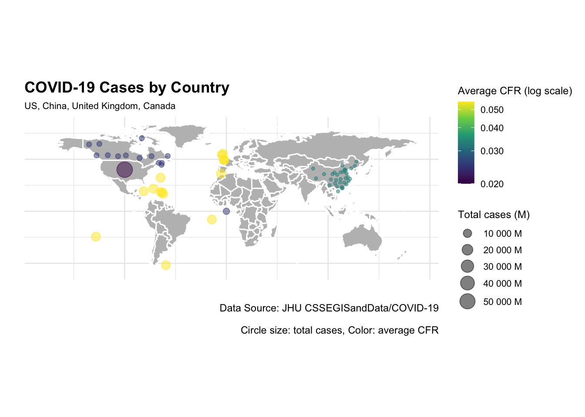
The difference in the number of cases and deaths between the US and China is striking. The US has the highest number of cases and deaths, while China has the lowest number of cases and deaths. The United Kingdom and Canada have a similar number of cases and deaths, but the United Kingdom has a higher case fatality rate (CFR) than Canada.
Let’s now calculate the DALYs for COVID-19, starting with the YLLs. We know that the simplified formula for YLLs is the number of deaths multiplied by the standard life expectancy at the age of death. The standard life expectancy for these countries varies, but we can use the global average of 72.6 years.
Also, we group the date by 4 months cycles to calculate the YLLs.
COVID19_yll_4months <- COVID19_4countries %>%
mutate(month = as.numeric(format(date, "%m")),
year = as.numeric(format(date, "%Y")),
month_cycle = case_when(month %in% 1:4 ~ "Jan-Apr",
month %in% 5:8 ~ "May-Aug",
month %in% 9:12 ~ "Sep-Dec")) %>%
group_by(country_region, year, month_cycle) %>%
summarise(cases = sum(cases),
deaths = sum(deaths),
cfr = round(deaths / cases, 3)) %>%
mutate(ylls = deaths * 72.6) %>%
arrange(year, month_cycle, ylls)
COVID19_yll_4months %>%
select(year, month_cycle, ylls) %>%
head()
#> # A tibble: 6 × 4
#> # Groups: country_region, year [4]
#> country_region year month_cycle ylls
#> <chr> <dbl> <chr> <dbl>
#> 1 Canada 2020 Jan-Apr 62225750.
#> 2 US 2020 Jan-Apr 80674499.
#> 3 China 2020 Jan-Apr 655246654.
#> 4 United Kingdom 2020 Jan-Apr 800881092
#> 5 US 2020 May-Aug 1158612365.
#> 6 Canada 2020 May-Aug 1165061568And then plot the YLLs by country and month cycle, with the y axis representing the YLLs formatted in millions.
COVID19_yll_4months %>%
ggplot() +
geom_col(aes(x = month_cycle, y = ylls,
fill = country_region)) +
scale_y_continuous(
labels = scales::unit_format(unit = "M",
scale = 1e-6)) +
scale_fill_grey(start = 0.2, end = 0.8) +
labs(title = "YLLs by Country and Month Cycle",
fill = "Country",
x = "4-Month cycle",
y = "YLLs") +
facet_wrap(~year) +
theme(axis.text.x = element_text(angle = 45, hjust = 1))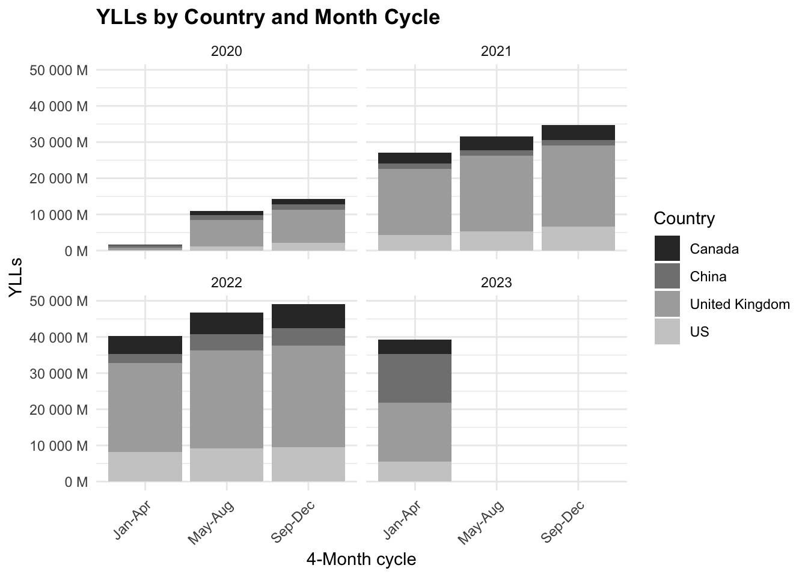
The majority of YLLs are in the United Kingdom, followed by the US, Canada, and China. The YLLs are highest in the first 4-month cycle (Jan-Apr) and decrease in the following cycles.
Let’s now calculate the YLDs for COVID-19. The YLDs are calculated by multiplying the number of cases by the disability weight. The Disability Weight applied is that for low respiratory diseases which is 0.133. As of 2020, the Global Burden of Disease Study 2019 estimated that the DALYs for lower respiratory diseases was 1,000,000. We can use the {hmsidwR} package to get the disability weight for lower respiratory diseases.
hmsidwR::disweights %>%
filter(str_detect(sequela, "lower respiratory")) %>%
select(sequela, dw)
#> # A tibble: 4 × 2
#> sequela dw
#> <chr> <dbl>
#> 1 Moderate lower respiratory infections 0.051
#> 2 Severe lower respiratory infections 0.133
#> 3 Moderate lower respiratory infections 0.0506
#> 4 Severe lower respiratory infections 0.133We know that the simplified formula for YLDs is the prevalence of the disease multiplied by the disability weight. To calculate the prevalence, we need the population of each country. For this task we use the {wpp2022} package, which provides the population data from the 2022 revision of the United Nations World Population Prospects (WPP 2022). It includes both historical estimates and projections of demographic indicators such as population counts and fertility rates, accommodating the challenges brought on by events like the COVID-19 pandemic and transitioning from five-year to one-year data intervals.
library(wpp2022)
# data(package = "wpp2022")data(pop1dt)
pop_4countries <- pop1dt %>%
filter(
year %in% c(2020, 2021),
name %in% c(
"United States of America",
"China",
"United Kingdom",
"Canada")) %>%
mutate(name = ifelse(name == "United States of America", "US", name)) %>%
select(name, year, pop) %>%
arrange(year, name)
pop_4countries %>% head()
#> name year pop
#> <char> <int> <num>
#> 1: Canada 2020 38019.18
#> 2: China 2020 1425861.54
#> 3: US 2020 336495.77
#> 4: United Kingdom 2020 67167.77
#> 5: Canada 2021 38290.85
#> 6: China 2021 1425925.39Calculate the prevalence of COVID-19 cases per 1,000,000 people.
prevalence = \frac{cases}{population} * 1,000,000
COVID19_dalys <- COVID19_yll_4months %>%
full_join(pop_4countries,
by = c("country_region" = "name", "year")) %>%
mutate(prevalence = cases / pop * 1000000,
dw = 0.133,
ylds = prevalence * dw,
dalys = ylls + ylds) %>%
arrange(year, month_cycle, prevalence) %>%
select(country_region, year,
month_cycle, ylls, ylds, dalys)
COVID19_dalys %>%
head()
#> # A tibble: 6 × 6
#> # Groups: country_region, year [4]
#> country_region year month_cycle ylls ylds dalys
#> <chr> <dbl> <chr> <dbl> <dbl> <dbl>
#> 1 US 2020 Jan-Apr 80674499. 8342075. 89016575.
#> 2 China 2020 Jan-Apr 655246654. 21433596. 676680249.
#> 3 Canada 2020 Jan-Apr 62225750. 60966727. 123192477.
#> 4 United Kingdom 2020 Jan-Apr 800881092 107263600. 908144692.
#> 5 China 2020 May-Aug 1434752563. 34879873. 1469632436.
#> 6 US 2020 May-Aug 1158612365. 153456778. 1312069143.If we calculate the YLDs with the incidence instead of prevalence, we get the same results, because the incidence is the number of new cases in a given period, while the prevalence is the number of existing cases in a given period. So, we should consider the cumulative number of cases to calculate the prevalence. In order to calculate the cumulative number of cases, we need to group the data by year and month cycle.
And then plot the YLDs by country and month cycle, with the y axis representing the YLDs formatted in millions.
COVID19_dalys %>%
filter(year %in% c(2020, 2021)) %>%
ggplot() +
geom_col(aes(x = month_cycle, y = ylds,
fill = country_region)) +
scale_y_continuous(
labels = scales::unit_format(unit = "M",
scale = 1e-6)) +
scale_fill_grey(start = 0.2, end = 0.8) +
labs(title = "YLDs by Country and Month Cycle",
fill = "Country",
x = "4-Month Cycle", y = "YLDs") +
facet_wrap(~year) +
theme(axis.text.x = element_text(angle = 45, hjust = 1))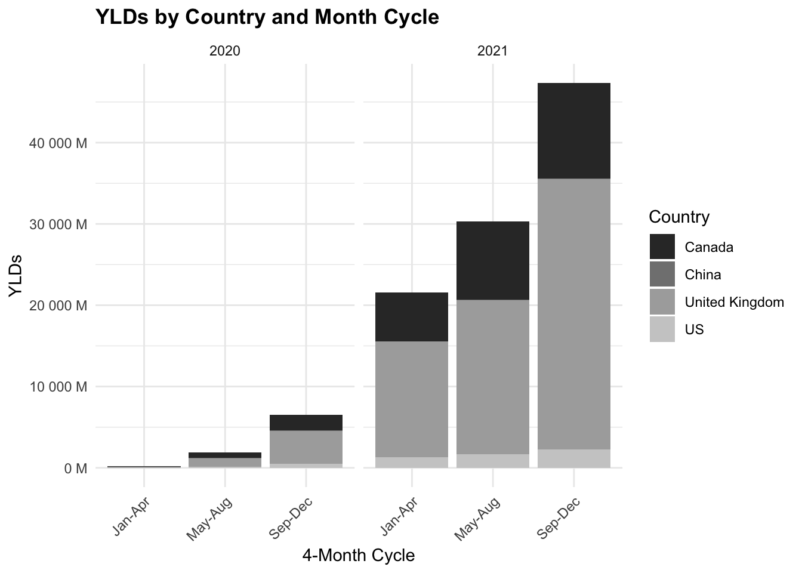
We can see that the YLDs are highest in the United Kingdom, followed by the US, Canada, and China. The YLDs are highest in the first 4-month cycle (Jan-Apr) and decrease in the following cycles.
Finally, let’s plot the DALYs by country and month cycle, with the y axis representing the DALYs formatted in millions.
COVID19_dalys %>%
filter(year %in% c(2020, 2021)) %>%
ggplot() +
geom_col(aes(x = month_cycle, y = dalys,
fill = country_region)) +
scale_y_continuous(
labels = scales::unit_format(unit = "M",
scale = 1e-6)) +
scale_fill_grey(start = 0.2, end = 0.8) +
labs(title = "DALYs by Country and Month Cycle",
fill = "Country",
x = "4-Month Cycle", y = "DALYs") +
facet_wrap(~year) +
theme(axis.text.x = element_text(angle = 45, hjust = 1))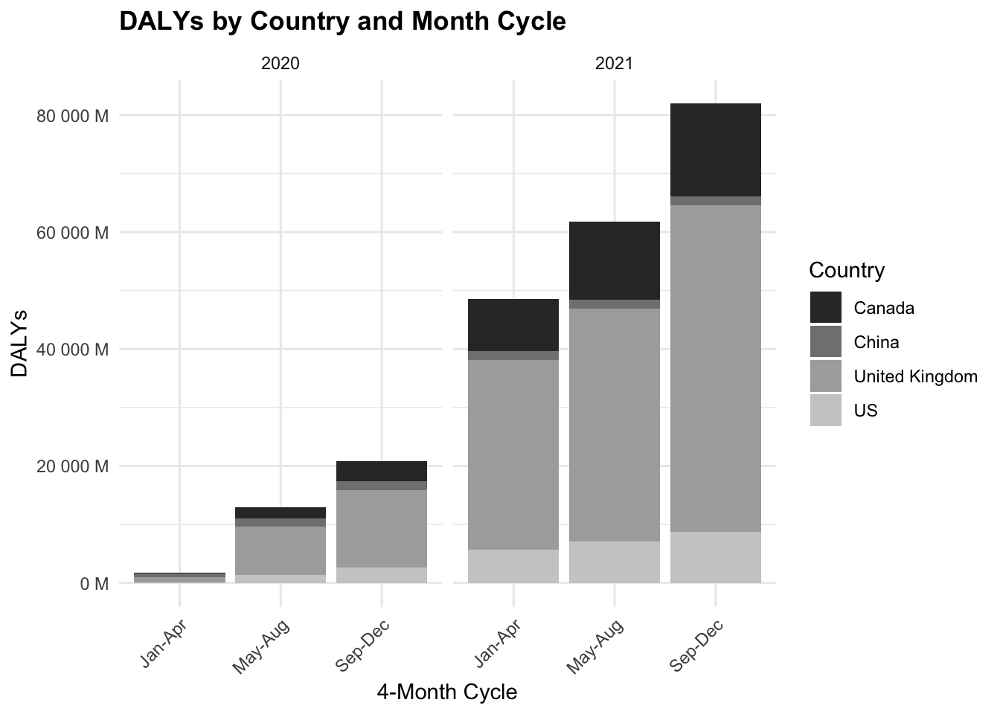
15.5 Summary
This chapter examined the COVID-19 pandemic, covering its origin, spread, and global impact. We explored the epidemiology of the virus, including its zoonotic origins, symptoms, and transmission methods.
Key preventive measures such as diagnostic testing, treatments, and vaccination efforts were discussed, emphasizing strategies to control the pandemic.
We also analysed COVID-19 modelling, using: - The SEIR model to simulate virus transmission, - Bayesian analysis for infection rate predictions, and - Ensemble modelling (Decision Tree, Random Forest, KNN, SVM) to enhance forecast accuracy.
Additionally, we highlighted the use of GIS mapping to track and visualize outbreaks and assessed COVID-19’s health burden through Disability-Adjusted Life Years (DALYs) using JHU GitHub data.
“Coronaviridae - Wikipedia,” n.d., https://en.wikipedia.org/wiki/Coronaviridae.↩︎
“Pandemic - Wikipedia,” n.d., https://en.wikipedia.org/wiki/Pandemic.↩︎
“WHO-Convened Global Study of Origins of SARS-CoV-2: China Part,” n.d., https://www.who.int/publications/i/item/who-convened-global-study-of-origins-of-sars-cov-2-china-part.↩︎
“Zoonosis - Wikipedia,” n.d., https://en.wikipedia.org/wiki/Zoonosis.↩︎
Xing-Yao Huang et al., “A Pangolin-Origin SARS-CoV-2-Related Coronavirus: Infectivity, Pathogenicity, and Cross-Protection by Preexisting Immunity,” Cell Discovery 9, no. 1 (June 17, 2023): 1–13, doi:10.1038/s41421-023-00557-9.↩︎
M. D. Laura H. Kahn, One Health and the Politics of COVID-19 (Johns Hopkins University Press, 2024), doi:10.56021/9781421449326.↩︎
Gerardo Chowell et al., “An Ensemble n-Sub-Epidemic Modeling Framework for Short-Term Forecasting Epidemic Trajectories: Application to the COVID-19 Pandemic in the USA,” PLOS Computational Biology 18, no. 10 (October 6, 2022): e1010602, doi:10.1371/journal.pcbi.1010602.↩︎